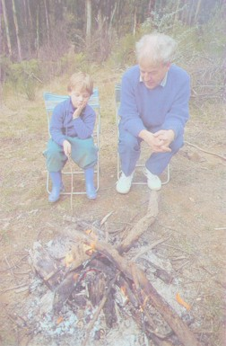
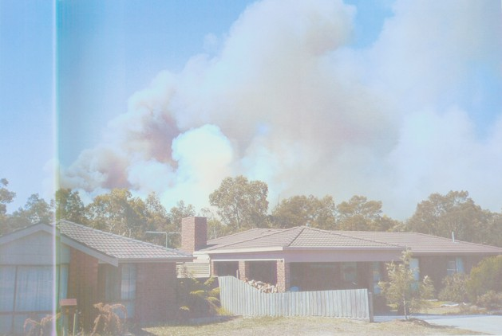
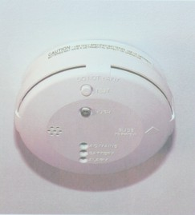
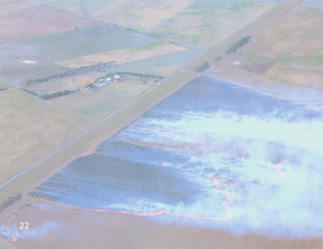
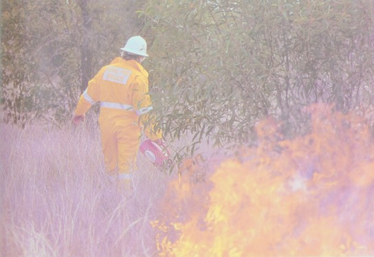
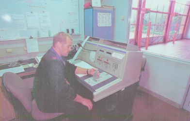
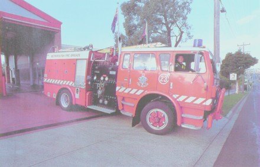
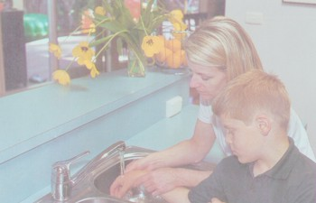

This DAISY book has been produced by the National Information Library Service in 2003.
This DAISY book contains the full text as well as an audio narration, and has been structured using two levels:
Level 1, table of contents, index and main headings, and
Level 2, sub headings and alphabetical sections within the index.
Topics can be accessed by their page number. Please note that the required topic may not be the first item on that particular page.
The full text of this DAISY book may be accessed using DAISY playback software.
1Cover Notes 2
Acknowledgements 3
1. Fire! 4
2. Fire safety at home 6
3. Fire safety at school 12
4. Fire safety in the city 16
5. Fire safety in the country 18
6. Fire safety signs 24
7. How fire fighters keep us safe 26
8. What happens when you call the fire brigade? 28
9. Some helpful hints 30
Glossary 31
Index 32
Publishing and Copyright Details 33
Closing Announcement 34
2Safety is about keeping safe and knowing what to do in an emergency.
Have you heard people say:
"Only swim between the flags"
"Slip, slop, slap"
"Ride safely"
"Use your common sense"
"Keep your eyes open"
These are statements that people sometimes say to make others aware of keeping safe.
The safety series encourages the reader to think about their safety in different situations. Each book identifies aspects of home, school or the local environment that present risks to safety or protect people from danger.
For clear and simple information about safety, look at these books in the series:
Personal safety
Home safety
Outdoor safety
Road safety
Water safety
Fire safety
3The author wishes to thank librarian Cathy Hill and Rex Marshall, Fire Prevention Officer with the NSW Fire Brigades for their generous help.
The author and the publisher are grateful to the following for permission to reproduce copyright material:
Cover photograph of fire fighters courtesy of Bill Thomas/Imagen.
All photographs by Bill Thomas/Imagen with the exception of: CFA, p. 27; Dr Heinz Gert de Couet/Auscape, p. 21; Jean-Paul Ferrero/Auscape, p. 23; Wayne Lawler/Auscape, p. 22.
While every care has been taken to trace and acknowledge copyright, the publishers tender their apologies for any accidental infringement where copyright has proved untraceable.
4Fires start when something hot meets something that can burn. Fires produce heat, light and smoke.
Many fires are good. We use fire to cook our food and to keep warm. Most cars burn fuel in their engines. So do trains and planes.

Photograph: Image of a man and boy sitting next to an open camp fire.
Caption: Campfires can be fun when in the outdoors, but it is important to never leave them unattended as they can quickly turn into bigger, more dangerous fires.
Good fires can quickly turn into bad fires. Bad fires can turn into disasters such as bushfires and burning buildings. Most bad fires happen when someone is careless and allows a fire to get out of control. However, some people cause fires deliberately.

Photograph: Image of a large bush fire in the background, which threatens new homes in the foreground.
Caption: Bushfires can spread quickly and threaten nearby homes.
There are many fire dangers at home, and many ways to make fires safe at home.
Fires at home are mostly used for heating and cooking. Gas burners may be used for room heating or water heating. Matches and lighters are used in most homes.
An open fire in the living area should always have a fire guard in front of it. This stops sparks from jumping out of the fire, which could then set something else on fire. It also prevents someone accidentally falling into the fire and small children from reaching in to touch the fire.

Photograph: Image of a wire mesh fire guard in front of an open fire.
Caption: Sparks can jump from an open fire and set something nearby alight. Safety guards stop the sparks from jumping out.
Heaters, too, can get hot enough to burn. Many heaters now have automatic cut-off switches that turn them off if they over-heat or tip over.
Heaters and open fires should always have a clear area around them. Flammable things left close to a fire or heater can catch alight easily.
8It is easy to get burnt from hot things when cooking. Pot and pan handles should be turned away from you so that they cannot be bumped accidentally. Some people put guard rail around the edge of a stove to prevent pots being knocked off the stove altogether.
Barbecues are popular for outdoor cooking. Matches are needed to light a barbecue or some stoves. Matches can be dangerous and should only be used by adults or under adult supervision. People cooking on a barbecue should not leave it unattended.

Photograph: Image of an outdoor wood fired barbeque, alight.
Caption: Barbecues are very popular for outdoor cooking, especially in warm weather.
Photograph: Image of a gas stove with two pans on top, handles pointing inwards.
Caption: Turning pot and pan handles inwards can stop them from being knocked accidentally.
Turn pot and pan handles inwards.
Wear oven gloves when handling hot dishes, such as those from an oven.
Ask an adult to light gas jets or gas ovens.
Never leave the cooking unattended.
It is fun to have candles on a birthday cake. Once lit, it is better not to leave a candle burning on its own.

Photograph: Image of a family enjoying the lighting of a birthday cake together.
Caption: Candles on a birthday cake are fun, but they should never be left unattended in case they set something else alight.
If a fire starts to burn at home, a smoke alarm will give off an early warning. This early warning may give people time to get safely out of a burning house. Smoke alarms should be checked regularly to make sure they are working.
Some families have a home fire escape plan. A home fire plan usually includes at least two different ways to get out of every room, and out of the house. A special meeting place is arranged so a family can check that everyone is out of the house. The fire escape plan is practised regularly to make sure that everyone in the family knows what to do.

Photograph: Image of an indoor smoke detector, showing the test button.
Caption: A smoke alarm will give off an early warning if there is a fire. This can give people inside a house time to get out safely.

Photograph: Image of a fire truck outside a home as firefighters put out a fire.
Caption: If there is a fire at home, get out of the house and wait for the fire brigade to arrive.
If you see flames or smoke, try to let someone in your family know. Shout "Fire!" or bang on the walls. If a room is filled with smoke, get down on the floor and crawl towards the door. Smoke rises so it will be easier to breathe if you are down low below the smoke.
Touch the door to see if it is hot. If it is hot do not open it. Cover the crack under the door with something like a blanket or jumper, and look for another way to get out of the room--such as a window. If it is a high window, you can throw something soft down on the ground first. Then lower yourself down before dropping to the ground.
Once you are safely out of the house, find a telephone and dial "000" to contact the fire brigade. Then go to your special meeting place and wait with your family for the fire brigade to arrive. Never go back into the house.
12Like many big buildings where there are a lot of people, schools must be built from materials that do not burn quickly. They must also have fire escapes and exit signs.
Some buildings have fire extinguishers that adults can use to put out small fires. Some also have automatic sprinklers to cool a fire.
13All schools have fire escape plans worked out in case of a fire. They practise their plan in a fire drill so that everyone knows what to do.
In a fire drill, the fire alarm sounds and the fire brigade comes to the school, just as if there really was a fire.

Photograph: Image of children and teachers leaving a classroom in an orderly manner.
Caption: Schools regularly practise fire drill escape plans so that everyone knows what to do in case there is a fire.
If a fire starts at school and people need to get out, the fire alarm will sound. It is important that everyone stays calm, and follows the safety plan practised in the fire drills.

Photograph: Image of students standing in an open grassed area, as the teacher checks they are all there.
Caption: In a fire drill situation, teachers will check that all students are safely out of the building by marking the students' names off the roll.
It is important to know that everyone is safe. Teachers will take the students to a safe area, line them up and check that everyone is safe while they wait for the fire brigade.
If you see smoke or fire at school, tell a teacher immediately.
16Fires can start in big public buildings such as shopping centres, office buildings, cinemas and stadiums. Like schools, these buildings must be built from materials that do not burn quickly. They must have fire escapes and exit signs. They also have automatic sprinkler systems that come on when there is a fire, and fire alarms that are connected directly to fire stations.

Photograph: Image of an exit sign on the wall.
Caption: Exit signs must be clearly displayed in all public buildings so that people know how to get out if there is a fire.
Buildings with lifts have stairs as their fire escape. People use the stairs to escape if there is a fire because lifts can stop and become traps. To warn people, most lifts have signs on them saying "Do not use in case of fire".

Photograph: Buttons on the outside of a lift, with warning sign (In case of fire do not use lifts).
Caption: Lifts have signs that warn people not to use them if there is a fire.
In the country there are usually a lot of materials such as grass and sticks to keep a fire burning for a long time. When fires start in the bush, forests or grasslands they can quickly get out of control. Hot, dry, windy days help fires spread even further.

Photograph: Image of the charred remains of tree trunks after a bush fire.
Caption: There is a lot of fuel in bush areas to keep a fire burning for a long time.
People who live in or close to forests or bush areas are especially aware of fire. When bushfires are near they listen to the local radio and television for fire warnings. If there is a fire warning, people may be advised to leave their homes if there is plenty of time, or stay inside and take certain steps if the fire is very close.

Photograph: Image of a man on a ladder clearing dead leaves from the gutters around his roof.
Caption: People who live in bush areas need to be especially aware of fire. They need to take extra care to keep their homes clear of any extra fuel that would help a fire to burn, such as dry leaves in the guttering.
People whose homes are in or near bushland are at risk of being caught in a bushfire. If this happens, usually the safest thing for them to do is to stay inside their homes. Sometimes people hose their houses with water. This makes it harder for a house to catch alight.
If you are caught outdoors during a bushfire, find or make a clear space and lie down on the ground. Cover yourself with blankets or clothing to shield yourself from the heat. Move away from places up-hill from the direction of the fire because heat rises. Never run uphill to try to get away from a fire because fires travel faster uphill.

Photograph: Image of a man hosing the outside of a weatherboard house.
Caption: Sometimes hosing down a house can help to protect it from a bushfire.
If you are caught in a car during a bushfire, there are many things you can do to protect yourself. If possible, the car should be parked in a burnt-out area. Closing all the windows and vents can stop much of the smoke from getting into the car. Turning the headlights on makes it easier for other cars or the fire brigade to see you. Getting down onto the car floor and covering yourself with a cotton or wool blanket or extra clothing can help you to breathe more easily and keep you cooler.

Photograph: Image of a large fire with high flames burning through dry bushland.
Caption: Bushfires can spread very quickly, giving off lots of smoke and extreme heat.
In Australia, the bushfire danger season is between October and March when the weather is mostly hot and dry. Special permission is needed to light a fire in the bushfire danger season.

Photograph: Image from the sky of a large open grassed paddock being burnt while the winds blow away from the nearby house.
Caption: Controlled burning reduces the amount of fuel in case of a bush fire.
Sometimes farmers or park rangers set fires deliberately in rural areas. This is called controlled burning. It is done just before summer to reduce the amount of natural fuel such as leaf litter, grass and sticks. Then, if there is a bushfire, it is less likely to burn quickly.

Photograph: Image of a firefighter delibrately lighting dry grass and watching it burn.
Caption: Controlled burning needs to be done with extreme care and only by people who are trained to know what to do.
Signs warn us of fire danger. They can also tell us what to do in an emergency fire situation.
During the fire danger season warnings are given on days of extreme fire danger on radio and television. On these days no fires may be lit in the open. This means you are not allowed to have any sort of fire outside, including a barbecue.

Photograph: Image of a sign indicating the fire danger today. The indicator can be changed to low, moderate, high, very high and extreme.
Caption: This sign warns people to take care on days of high fire danger.
Photograph: Image of a sign showing written and graphical instructions of what to do in a fire.
Caption: Fire orders are displayed to tell people what to do in emergency fire situations.

Photograph: Image of a large DANGER sign warning people not to smoke around fuel.
Caption: It is very dangerous to have any sort of flame or sparks around petrol.

Photograph: Image of a sign in a bushy area telling people to only use the fireplaces provided.
Caption: In many forest areas fires can only be lit in secure fire places, where there is less risk that they will set something else alight.
Fire fighters are trained to fight fires. They wear special clothing and sometimes even breathing masks to help them to breathe. They know how to keep themselves and the public safe during all sorts of fires.
In urban areas, fire fighters may use water from a fire hydrant to put out a fire. Sometimes they may also use water from a swimming pool, creek or river if there is one nearby.

Photograph: Image of a fire hydrant along the roadside.
Caption: Fire hydrants provide a ready water supply to use on fires in urban areas.

Photograph: Image of a firefighter about to enter a house wearing breathing apparatus.
Caption: Fire fighters wear special clothing and sometimes breathing masks to help protect them when facing a fire.
To fight fires in high-rise buildings fire fighters have special folding ladders. Ladders also help them to reach rooftops and high windows, and to rescue people.
In country areas many fire fighters are volunteers. They use special tankers filled with water that they take to the fire. They may also use planes and helicopters to drop water onto areas that cannot be reached by road.

Photograph: Image of CFA firefighters standing in front of the station, waving to the camera.
Caption: Many fire fighters in country areas are volunteers.
When someone telephones "000" to report a fire the information is directed to the Fire Brigade Communication Centre.
If the fire is in an urban area, the nearest metropolitan fire stations are then notified.

Photograph: Image of a man sitting at desk with telephone and communications equipment.
Caption: When there is a fire, a person at the Fire Brigade Communications Centre contacts the two nearest metropolitan fire stations.
If the fire is in a country area, the Fire Control Officer is notified.
The fire fighters then get ready with their protective clothing and climb into their trucks.
When they arrive at the fire, they will use whatever equipment is necessary to put out the fire and rescue any people who may need help.
Sometimes fire fighters need extra help from the police or ambulance service. The State Emergency Service (SES) or other volunteer organisations can sometimes help, too.

Photograph: Image of a fire truck leaving a fire station.
Caption: Fire fighters need to respond quickly to emergency fire situations.
If you get burnt, you can cool your skin by immediately putting it under cold running water. Hold the burn under cold water for at least ten minutes, and even up to thirty minutes.
If your clothing catches fire, do not try to run. Stop, drop down and roll on the ground. Rolling will squash the fire and put it out. If the fire is burning upwards, use your hands to shield your face. You can also use blankets or coats to smother a fire, if you have them.

Photograph: Image of a lady holding a childs hand under a running tap.
Caption: Minor burns can be treated by holding them under cold running water. More serious burns may need to be treated in a hospital.
Steps to follow in case of a fire
Devices that squirt water or foam to put out a fire
A connection to a water supply that is used to fight fires
Easily set on fire
Something that burns
Dead leaves, grass, twigs and branches on the bush or forest floor
Country areas
Special vehicles that carry water to spray on fires
City and suburban areas
Unpaid workers
32Note: alphabetical sections within the index can be searched on level two. When selecting a topic by page number, the required topic may not be the first item on that particular page.
barbecues 8
bushfires 5, 18-19, 20-21
candles 9
cars 21
controlled burning 23
cooking 8-9
danger season 22, 24
disasters 5
fire brigade, 11, 28-29
fire drills 13
fire escape plan
at home 10-11
at school 14-15
fire fighters 26-27
fire fighting equipment 12, 26-27
fire warnings 19
first aid 30
fuels 4
heaters 6-7
ladders 27
lifts 17
matches 6, 8
open fires 6-7
safety signs 24-25
State Emergency Service (SES) 29
smoke 11, 21
smoke alarms 10
sprinklers 12, 16
stairs 17
tankers 27
33This book was published by Macmillan Education Australia, in 2000. This is the first edition, ISBN 0 7329 5912 8.
This book is copyright and permission to produce this DAISY edition has been given by the copyright holder to the National Information Library Service. No unauthorized copying, broadcasting or public performance of this recording is permitted.
34That is the end of Fire Safety, by Wendy Blaxland.
This DAISY book was produced by the National Information Library Service in 2003.
This book has been produced in DAISY format 2.02